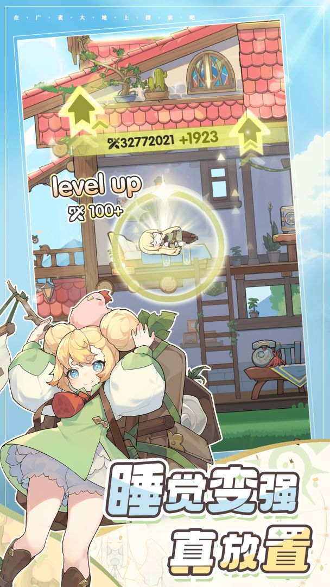

杖剑传说 · 游戏体验与发行分析报告
一执行摘要与产品定位
《杖剑传说》是雷霆游戏研发、吉比特发行的放置类MMORPG手游，2025年5月大陆上线，2025年7月港澳台+日本上线，2026年5月欧美上线，计划2026年Q4进入韩国及东南亚市场。产品将放置的低肝度与MMO的社交深度结合，以自由转职、交易行经济、赛季制内容更新作为核心差异化特征。2026上半年合计流水约14.6亿元，TapTap评分8.6/223万关注，是吉比特境外发行战略的核心产品之一。
1.1 产品概况
品类定位：放置类MMORPG（Idle MMORPG）。区别于传统放置RPG的单机式养成，杖剑传说在放置机制上叠加了MMO的社交层，包括公会、组队副本、交易行、界域蹲车等实时社交系统，使产品从"单人放置养成"升级为"放置驱动的社交MMO"。这一融合使产品在放置RPG品类中占据了"高ARPU+高留存天花板"的独特位置。
画面风格：2D竖屏、国风二次元美术风格，剑与魔法的异世界世界观。美术资源经历过一次完整替换（最早demo为修仙题材，后改为异世界题材），整体呈现为二次元美术风格，角色设计精致，场景以浮空岛、云雾、奇幻地貌为主。整体美术定位偏"轻松治愈"，与产品"怪轻松的异世界冒险"的基调一致。

来源：TapTap杖剑传说官方宣传图
目标受众：综合制作人访谈、巨量算数数据及社区观察，杖剑传说的用户画像具有以下特征：
基于游戏系统设计推断及玩家反馈样本，核心用户可进一步分为三类。以下人群占比为基于社区观察的定性推断，非官方数据：
| 人群 | 推测占比 | 画像 | 核心诉求 |
|---|---|---|---|
| 核心MMO玩家 | 约15-20%（推测） | 25-35岁，有MMO经历，追求社交协作和数值深度，月付费500-5000元+ | 社交深度、职业平衡、新内容密度 |
| 休闲放置玩家 | 约50-60%（推测） | 20-35岁，碎片化时间为主，偏好低肝度养成，月付费0-100元（月卡/通行证） | 低肝度、空窗期体验、付费性价比 |
| IP联动用户 | 约15-20%（推测） | 18-30岁，因特定联动IP进入，偏好收集和外观，月付费0-200元 | 联动频率、角色实战可用性 |
上线市场：采取分阶段全球化策略，可基于前序区域数据优化后续发行：
| 区域 | 上线时间 | 2026H1流水 | 状态 |
|---|---|---|---|
| 中国大陆 | 2025年5月29日 | 9.19亿元 | 运营中（S6赛季） |
| 港澳台+日本+新马（同步上线） | 2025年7月15日 | 3.33亿元 | 运营中（流水连续4季下降） |
| 欧美（Sword x Staff） | 2026年5月19日 | 2.07亿元 | 运营中（上线6周累计2000万美元） |
| 韩国+东南亚 | 2025年Q4（计划，吉比特董事长卢竑岩披露） | — | 待上线 |
※流水数据来源：吉比特2026年半年度报告（2026年1-6月）。中国大陆9.19亿、港澳台+日本3.33亿为财报直接披露；欧美2.07亿为上线6周累计约2000万美元折算。
累计流水：据吉比特财报，截至2025年前三季度（上线约4个月），国服总流水11.66亿元，海外版流水4.78亿元，合计超16亿元。2026年上半年全球流水约14.6亿元。
1.2 核心竞争力总结
相比同类放置RPG（以《出发吧麦芬》《剑与远征：启程》为参照），杖剑传说的核心竞争力可归纳为以下三点：
传统放置RPG的社交模型以异步互动为主（好友互赠体力、排行榜竞争），杖剑传说引入了公会讨伐、组队副本、界域蹲车、交易行等实时社交协作机制，使社交粘性从异步层级提升至同步层级。这是三款竞品中社交深度最高的设计，也是最难被复制的，需要组队副本、公会生态、交易行经济三个系统的协同运转。社交深度直接决定了留存天花板和ARPU上限，但社交体验依赖活跃用户基数，一旦用户基数萎缩，匹配池缩小将形成连锁衰减。
传统放置RPG的职业是固定的，体验多职业需重新养成角色。杖剑传说采用四职业（斗士/术士/贤者/骑士）自由转职、无损转换的设计，一个角色即可体验全部职业的技能和玩法。配合八转职业体系，提供了长线成长目标和社交驱动的付费激励（高转玩家在组队中优先被选择）。这一设计降低了多职业体验的养成成本，提升了玩家的内容消耗深度。转职材料也是核心付费点之一，形成"体验需求→付费转化"的闭环。
不同于传统放置RPG的功能迭代更新，杖剑传说采用类似MMO的赛季制，每3-4个月推出新国度+新转职阶+新伙伴+新幻兽，保持内容增量感。同时，14个月内完成9次以上IP联动（频率约1.5-2月/次），覆盖国漫、虚拟歌手、经典影视等多品类IP，持续提供新鲜感和情感连接。最新一次联动为2026年9月24日开启的「非人哉」联动，推出九月、小玉、敖烈、哪吒四位联动角色，签到可免费领取伙伴九月及30连抽。赛季制构建了跨赛季的叙事目标（如S6开篇的"诸神篇章"），联动则提供事件驱动的回流动力，两者结合使产品的内容供给密度在放置RPG品类中处于领先位置。
二核心玩法与体验拆解
2.1 核心体验循环（Core Loop）分析
杖剑传说的核心体验循环呈现"短期放置收菜+中期养成推进+长期赛季目标"的三层结构。短期循环以"上线→收菜→推进→下线"为核心，依赖放置机制降低操作压力；中期循环以养成系统推进为驱动，通过战力提升解锁新内容；长期循环以赛季制内容更新为目标，维持长线留存动力。
图2-1：核心体验循环示意图 · 紫色节点为关键付费/决策节点
短期循环（每日）：玩家上线后首先领取离线挂机收益（家园小推车的离线收益，最高可储存36小时），然后推进主线任务、清空日常活动、刷素材秘境、挑战幻想阶梯（爬塔），最后将体力消耗完毕后下线挂机。符合放置RPG的碎片化时间设计。关键系统包括：
- 家园小推车：离线自动产出经验、金币、材料，是放置收益的核心载体
- 素材秘境：4个秘境分别产出装备升级、金币、技能升级、遗物升级资源，消耗体力获取，是日常资源的主要来源
- 幻想阶梯：爬塔玩法，可跨战力挑战，是检验战力和获取高额奖励的核心出口
- 心愿女神像：技能抽取系统，开局赠送30次传说抽取机会，保底70次，是技能养成的核心入口
放置减负设计：核心养成项（装备、技能、宠物等级）采用"养格子"的提升方式，玩家培养的是栏位等级而非具体装备/技能，装备和技能更替时可无成本更换，大幅降低了试错成本和肝度。大地图探索也设置了一键追踪、战力碾压直接击杀、快捷解谜等便捷功能，减轻玩家开图负担。
中期循环（每周/每月）：以养成系统推进为驱动。玩家通过日常积累资源，投入到等级、装备强化（需保持4件装备平均升级以触发共鸣效果）、技能升级、幻兽培育、古遗物收集等核心养成项中，提升战力以解锁更高难度的副本和转职阶。中期循环的核心张力在于"资源有限性"，玩家需要在多个养成线之间做出资源分配决策，而转职系统提供了阶段性的成长目标。
长期循环（赛季，3-4个月）：以赛季制内容更新为驱动。每赛季推出新国度地图、新转职阶、新伙伴、新幻兽，提供跨赛季的叙事目标（如S6开篇的"诸神篇章"）。赛季评分奖励（星象合约）为玩家提供了赛季内的长线目标，而联动活动则提供事件驱动的回流动力。
2.2 组队与社交机制体验
杖剑传说的社交系统是其区别于传统放置RPG的核心特征。产品在放置机制上叠加了MMO的社交层，形成了"鼓励社交但不强制社交"的设计基调。
| 系统 | 社交类型 | 核心玩法 | 强制度 |
|---|---|---|---|
| 国度副本/团队副本 | 实时协作 | 4人组队挑战副本（每个国度地图对应特色副本，掉落装备与碎片），可自行组队或随机匹配；支持跨服组队 | 中（高难副本需组队） |
| 圣兽试炼 | 实时协作 | 6人组队单挑圣兽BOSS，限时回合内累计伤害，按伤害值发放奖励（前置：需先击败国度圣兽解锁） | 低（可选参与） |
| 混沌侵袭 | 竞技社交 | 4人组队刷小怪/打BOSS，每周轮流，结算给代币；伤害累计越高奖励越好 | 低（可选参与） |
| 公会系统 | 组织社交 | 公会讨伐（全公会成员可同时进入场景打公会BOSS，不固定人数）、天赋/科技升级、商店兑换，提供挂机助力设施和额外奖励 | 中（资源获取依赖公会） |
| 公会战 | 公会PVP | 异步回合制PVP：会长/副会长报名，成员各驻守1据点（3高级+6中级+若干普通），每人每次公会战最多进攻3次，每据点最多被击破3次；含段位赛制（黑铁→青铜→白银→黄金→钻石）与赛季战区结算排名奖励；按周循环（周日/二/四报名，一/三/五对战10:00-22:00） | 中（段位奖励驱动参与） |
| 交易行 | 经济社交 | 解锁商会后开放。含交易行（大部分商品用晨星互相交易，少部分买方付耀星卖方得晨星；价格每日08:00根据前日市场数据调整；部分商品如装备碎片受赛季限制）与拍卖行（用耀星竞拍，竞价被超过时无损返还，出售成功得等价晨星；竞价按梯度加价） | 低（可选参与） |
| 界域蹲车 | 异步协作 | 在特定地图区域蹲守世界BOSS，玩家轮流"开车"（发起挑战）共享奖励 | 低（社交驱动） |
优点：社交深度提升留存粘性
- 协作成就感：组队副本中玩家与敌人回合制行动，协作击败BOSS的成就感是单机放置RPG相对来说无法提供的体验，有效提升了社交粘性
- 经济互赖：交易行系统构建了"低氪刷碎片上架→重氪购买"的资源循环，零氪玩家通过"为大佬打工"获取资源，重氪玩家通过交易加速养成，形成了不同付费层级间的经济互赖关系
- 宽松的组队要求：不强制传统MMO的T/奶/DPS铁三角搭配。主流的4人国度/团队副本中可有多个重复职业；高氪玩家选择治疗（贤者）或坦克（骑士）职业也能打出高额伤害，实现战力碾压与职别跨越，降低了玩家选择职业的纠结和"职业歧视"
- 匹配与招募并行：大部分副本支持直接匹配随机组队和组队招募两种方式，前期战力不足时可招募挑选队友，中后期战力提升后可通过匹配快捷通关
- 跨服组队扩容：跨服组队机制扩大了匹配池，缓解了单服用户基数不足的问题
缺点：社交深度带来的体验摩擦
- 匹配等待时间：有玩家反馈部分时段组队副本匹配需约1分钟，非高峰期等待时间更长，与放置RPG"即开即玩"的体验预期存在冲突
- 低战歧视：高难副本的组队中，低战力玩家容易被踢出队伍，形成社交压力。随着用户基数萎缩，低活跃时段的匹配体验会进一步下降
- 公会活跃度依赖：公会BOSS、天赋升级、商店兑换等资源获取依赖公会活跃度，一旦公会成员退坑潮出现，资源获取将受阻
- 交易行工作室问题：官方8-9月封禁工作室账号4000+例、倒金500例，说明交易行经济系统存在工作室滥用问题，影响正常玩家的交易体验
2.3 新手留存与卡点设计（D1/D3/D7体验曲线）
基于新手攻略、玩家反馈及游戏系统设计推断，杖剑传说的新手体验曲线呈现"D1高密度引导→D2-D3内容解锁→D4+养成深化"的节奏。以下按天数拆解关键体验节点和潜在断崖点。
| 阶段 | 核心体验 | 关键系统解锁 | 潜在断崖点 |
|---|---|---|---|
| D1 | 高密度引导，任务内容丰富。跟随主线熟悉操作，技能系统开放（有什么带什么），装备强化开放（需保持4件平均升级触发共鸣），心愿女神像开放（送30抽） | 主线任务、技能系统、装备强化、心愿女神像、家园小推车 | 任务量过大导致疲劳；新手引导过长引发不耐烦 |
| D2-D3 | 推进主线解锁更多内容，优先刷体力效率高的任务。家园小推车可储存36小时离线收益。开始接触素材秘境和幻想阶梯 | 家园小推车、素材秘境、幻想阶梯、公会系统 | 主线卡点（战力不足无法推进）；资源分配迷茫 |
| D4-D6 | 职业强化和幻兽育成开始深化，优先度高的装备开始严格筛选。转职节点出现（100级后可转职，但转职后部分技能、古遗物、宠物需重新抽取构建，成本较高） | 幻兽系统、转职系统、交易行 | 转职战力门槛卡点；养成线过多导致资源分散；组队副本匹配体验差 |
| D7 | 7日签到福利发放，转职后体验新职业技能，赛季评分目标开始引导长线目标 | 7日签到奖励、赛季评分系统 | 转职后内容消耗完毕，进入日常循环的"无聊期" |
2.4 商业化体系拆解
杖剑传说的商业化以"月卡+基金+通行证+限时礼包+抽卡"为核心结构，付费点从6元首充延伸到高氪外观。但罗列付费点本身意义有限，更重要的是理解这套设计为什么匹配放置RPG×MMO的品类特征，以及对三类目标用户的付费迁移路径是否顺畅。
一、低门槛入口：放置RPG品类逻辑下的"免费游玩承诺"
放置RPG品类的核心用户特征是"时间充裕但付费意愿低"，这类玩家对"不花钱也能玩"的承诺极度敏感。杖剑传说的低门槛设计正是围绕这一特征展开：
| 低门槛付费点 | 价格 | 设计意图分析 |
|---|---|---|
| 新手礼包 | 6元 | 40级传说武器，用极低价格提供即时正反馈，完成首充转化 |
| 月卡 | 30元/月 | 据攻略每日200绑钻+5%经验，日均约1元，订阅定价较低 |
| 每日免费10抽 | 0元 | 签到+日常即送，降低抽卡焦虑，维持每日活跃 |
| 交易行 | 0元 | 低氪刷副本碎片上架交易行赚取晨星（硬通货）。部分放置RPG（如一念逍遥、剑与远征）也有交易系统，但杖剑传说的交易行直接产出硬通货，为零氪玩家提供了通过游戏行为获取付费资源的路径 |
| 签到幻装 | 0元 | 节日活动签到免费赠送整套幻装（如2025圣诞"星霜盛典"签到15天送圣诞幻装）。注：同期"雪人星愿"的盲盒机为付费玩法（直购幻装衣服30元、盲盒抽奖10发保底），非免费 |
分析：这套设计推测对休闲放置玩家（约50-60%用户基数）较友好。首充6元+月卡30元即可获得核心体验，交易行则为零氪玩家提供了可持续的成长路径。放置RPG品类的核心特征是玩家可通过挂机积累资源逐步成长，交易行将这一机制延伸为"通过游戏行为获取硬通货"，是放置品类低门槛理念在商业化层面的体现。相比部分硬核向MMO的数值付费门槛，杖剑传说将低门槛付费与挂机养成结合，推测有助于扩大付费面、降低玩家的付费心理压力。
二、赛季制基金：长线留存绑定与中氪承接
杖剑传说在赛季制框架下设计了多档基金产品。据玩家攻略记录，宠物基金（幻契盟约）128元、晨星基金98元、女神牌基金128元等，玩家攻略普遍认为这类产品"单次返还比例较高，但需持续多赛季购买才见效"。以宠物基金为例，据某攻略记录128元可得176次宠物抽卡，若按单抽6元的常规定价换算，等价约1056元，返还倍数约8倍。这一换算为攻略作者的计算，非官方返还比例。
| 基金类型 | 价格 | 绑定系统 | 设计逻辑 |
|---|---|---|---|
| 宠物基金（幻契盟约） | 128元 | 宠物抽取 | 将宠物养成成本分摊到赛季周期，绑定长期留存 |
| 晨星基金 | 98元 | 晨星货币 | 提供硬通货，降低日常资源焦虑 |
| 女神牌基金 | 128元 | 扭蛋机 | 据攻略有30%返点机制，消费返利绑定长期付费 |
分析：基金产品的设计逻辑推测为"用较高返还比例吸引中氪玩家持续付费，而非一次性消费"。这对核心MMO玩家（约15-20%用户，付费意愿强、追求战力提升）可能有较强吸引力，这类玩家愿意为长期成长投入，基金的分摊式设计匹配了他们的赛季节奏。
但潜在问题在于：基金"不持续买效果有限"的特性，对间歇性付费的中氪玩家可能不友好。一个每月预算200-300元的玩家，买了月卡30元后剩余预算有限，买一两次基金可能看不到明显效果，容易放弃。这可能导致下一节分析的"中间档位断层"问题。
三、抽卡深度设计：放置RPG的"碎片化付费"与MMO的"养成深度"结合（分析）
杖剑传说的核心付费项为技能、古遗物、幻兽三大系统，三者均有重复升星与图鉴机制。抽卡机制有两个关键设计值得分析：
- "升级制"卡池：低阶池→高阶池的升级结构，消耗低阶资源兑换高阶池门票。这一设计推测的意义在于：降低抽卡的负反馈。传统放置RPG抽卡是"出垃圾=浪费"，升级制让低阶产出也有积累价值，玩家不会因为抽到低阶道具而产生强烈挫败感。这推测对时间充裕但付费敏感的放置用户画像较匹配。
- 转职联动卡池：转职后技能卡池内容变化，低阶池会产出当前职业的技能。这一设计推测的意义在于：将转职系统与付费深度绑定。玩家每次转职都意味着新的抽卡需求，一个角色全职业自由转职的卖点，在商业化层面变成了"每个职业都需要独立投入"的付费深度扩展。对追求全职业体验的核心MMO玩家，这推测是较强的付费驱动。
分析：这套抽卡设计推测是"放置的低门槛抽卡体验+MMO的多系统养成深度"的结合。低门槛入口让休闲玩家不抗拒付费，多系统深度则让核心玩家有持续投入的空间。但深度本身也意味着：当一个玩家想要追上第一梯队，可能需要同时投入技能、古遗物、幻兽三个系统，总成本推测远超单一养成线的放置竞品。
四、付费迁移路径分析：三层用户的关键断层
结合三类用户画像，基于玩家攻略记录的付费点价格与社区反馈，分析各层级的付费迁移路径是否顺畅：
| 用户层级 | 月预算 | 核心付费点 | 迁移路径分析 |
|---|---|---|---|
| 零氪→微氪 | 0→30元 | 首充6元→月卡30元 | 6元首充提供即时正反馈，玩家攻略普遍认为月卡性价比高，迁移路径相对清晰、顺畅 |
| 微氪→低氪 | 30→100元 | →基金98-128元/巡礼之征 | 玩家攻略认为基金返还比例较高但需持续投入；巡礼之征据攻略早期68元/期，后续调整为98元/期（每期约半个月），迁移有吸引力，整体基本顺畅 |
| 低氪→中氪 | 100→500元 | →每日特惠18元/天+新人礼包组合+秘宝档位 | 据攻略整理，100-500元区间缺乏持续性的高性价比选项。每日特惠月开销约540元、新人礼包仅限首周，基金需持续多赛季才见效，迁移路径存在断层 |
| 中氪→重氪 | 500→5000元+ | →秘宝全档1344元/期+联动转盘+弹窗拉满 | 据攻略，秘宝和转盘有消费上限，达到上限后只能"1:1买耀星"或靠累计充值获取界域翅膀，玩家攻略认为后续付费性价比明显下降，存在性价比倒挂 |
基于玩家攻略整理的付费点价格与社区反馈，推测这是整套商业化设计中较关键的结构性问题。高返还比例产品集中在100元以下（月卡30元、基金98-128元），100元以上缺乏持续性的高性价比选项：
- 每日特惠18元/天：据攻略，10天180元可得1奇迹遗物+20技能抽+2传说遗物，玩家攻略认为单日性价比尚可，但月开销约540元，对月预算200-500元的中氪玩家不可持续
- 新人礼包：据攻略最高974元（新人扭蛋礼包四档30+98+198+648），但仅限首周，无法作为持续付费选项
- 基金需长期持续：玩家反馈单赛季买一两次效果不明显，对间歇性付费玩家不友好
推测结果：微氪玩家想加预算但缺乏好的承接产品，要么停在月卡+基金的低消费档，要么直接跳到重氪的1:1买耀星，中间缺少平滑过渡。
据玩家攻略，重氪玩家在买完所有较高返还比例的产品（月卡、基金、巡礼、秘宝全档）后，剩余付费选项主要有：
- 1:1买耀星：充值直接兑换付费货币，无额外溢价，玩家攻略普遍认为这是性价比最低的付费方式
- 界域翅膀：据交易平台账号信息，为累计充值约2万元可获得的外观奖励，无战力属性，对追求战力的重氪玩家吸引力有限
- 强化石礼包：弹屏礼包之一，攻略建议中氪以上可考虑拉满
推测这导致重氪玩家的"单位金钱战力回报"在达到一定消费量后明显下降。交易猫等平台可见"万氪账号不到1折出号"的现象（如2万氪账号仅售600-900元），这在一定程度上反映了重氪玩家对付费性价比的不满——后续付费多为1:1兑换，账号残值偏低。
五、弹窗礼包与限时活动：放置品类的"碎片化刺激"设计
杖剑传说的弹窗礼包（开图道具、抽卡礼包、强化石礼包）和限时活动（秘宝大作战、联动转盘）在功能上承担了"碎片化付费刺激"的角色：
- 对休闲放置玩家：据攻略，6元开图道具、6元秘宝档位提供了"小额即时消费"的出口，匹配碎片化游玩节奏。这部分设计推测是合理的，放置玩家不会一次性大额消费，但会被低单价+即时满足吸引
- 对IP联动用户：联动转盘是针对这类用户的核心付费点。据洛天依联动攻略，转盘300抽可拿完全部奖励（每次保底60抽）；获取第二个联动伙伴约需氪294元（98+128+68档位），三个伙伴全拿约需596元。不同联动的全收集成本有差异（罗小黑联动攻略记录全收集约1752元）。秘宝大作战的世界树能量据攻略可跨期保留，但联动转盘券是否跨期因活动而异
- 问题（玩家反馈）：弹窗礼包在开图、升级等节点频繁触发，虽然部分性价比据攻略评价较高，但"频繁弹窗"对放置玩家的"低压力"体验有破坏，放置用户的核心诉求是"不被打扰"，弹窗轰炸与品类调性存在张力
但中间档位（100-1000元）的性价比断层推测为较突出的结构性问题：高返还比例产品集中在100元以下，100元以上缺乏持续性承接选项，可能导致微氪→中氪的迁移路径断裂。重氪端则面临"1:1买耀星"的低性价比问题，交易平台可见"万氪账号不到1折出号"的现象。这与杖剑传说上线后月流水逐月下滑的趋势在方向上一致——当头部付费用户饱和且中间档位无法承接迁移时，流水可能快速回落。
核心调优方向：不是增加付费点数量，而是填补100-1000元区间的持续性高性价比产品，例如月费制中氪礼包（200-300元/月，含固定资源+限时道具）、提升每日礼包的保底机制、为重氪端设计阶梯式溢价（而非1:1断崖式跳变）。
三竞品横向对比分析
3.1 竞品选择
选取两款同品类竞品进行横向对比：《出发吧麦芬》（心动网络，2024年5月15日大陆上线）和《剑与远征：启程》（莉莉丝游戏研发、Farlight Games海外发行，2024年3月27日海外首发、8月8日大陆公测）。选品依据如下：

- 品类重叠度：三款均属放置RPG大品类，核心机制均包含离线挂机收益和长线养成
- 差异化路径不同：杖剑传说走"放置×MMO社交"，麦芬走"放置×轻社交双人同行"，剑远赴"放置×策略卡牌+开放世界探索"，三条路径代表了放置RPG社交化的不同方向，具备可比性
- 均已全球化发行：三款产品均已完成或正在进行海外发行，可对比境外发行策略
| 维度 | 杖剑传说 | 出发吧麦芬 | 剑与远征：启程 |
|---|---|---|---|
| 研发/发行 | SSStudio/雷霆游戏 | 心动网络股份有限公司（自研自发，制作团队Team MEKA，自称《天天打波利》原班人马） | 莉莉丝游戏/Farlight Games（海外发行） |
| 上线时间 | 2025年5月（大陆） | 2024年1月24日港澳台首发、5月15日大陆公测（TapTap官方显示） | 2024年3月27日海外首发（美区App Store首日登顶免费榜总榜第一）、2024年8月8日大陆公测（TapTap显示2025-04-28为国服赛季更新节点，非首次上线） |
| 核心品类 | 放置×MMO | 放置×轻社交（据制作人Yoky访谈：定位"介于轻度挂机放置和重度沉浸式MMO之间"） | 放置×策略卡牌+开放世界探索 |
| 画面 | 2D竖屏，二次元 | 3D竖屏，官方自称"日式西幻"风格，房车旅行世界观 | 3D竖屏，西式奇幻（官方自称"Magical Storybook"魔法故事书风格） |
| 社交模型 | 公会+交易行+组队副本 | 双人同行（2人固定搭档，官方定位"友爱"、"不被固定队伍和功利主义所束缚"）+家族+秘境+旅团 | 公会+跨服竞技+共享等级系统（共鸣水晶，5英雄共享全家） |
| 角色系统 | 四职业自由转职，八转 | 五大职业（剑士/游侠/学者/服事/影袭）+转职；官方玩法描述："自由构筑强大稳定的核心技能" | 六大英雄职业（坦克/战士/游侠/法师/刺客/辅助），阵营克制系统 |
| 商业化核心 | 转职材料+月卡+交易行 | 外观+月卡+通行证+麦乐兽抽取+骑宠（具体价格官方公开渠道未公示，需进入游戏内查看） | 英雄抽卡（4大池：全英雄招募/限定UP/新手/史诗）+月卡+通行证（伊索米亚月刊98元）+皮肤 |
| TapTap评分 | 8.6分 | 7.4分（15,482条评价，TapTap官方显示） | 6.6分（8,685条评价） |
| 流水参考 | 国服首月4.24亿，上线4个月国服+海外16亿 | 据点点数据：港澳台首月流水过亿、截至5月港澳台收入超6.5亿元；据点点数据国服首月iOS预估收入1.87亿元（已扣渠道分成） | 据Sensor Tower：海外收入占比约80%，下载量超1200万次，海外IAP收入1.28亿美元（截至2024年10月），美国市场收入占比超54%；2024年获Google Play年度最佳游戏、App Store年度游戏、TGA年度最佳手游提名 |
3.2 玩法与美术包装对比
画面差异
- 2D竖屏，二次元
- 剑与魔法异世界世界观
- 浮空岛、云雾奇幻地貌
- 角色设计偏精致日系
- 3D竖屏，官方自称"日式西幻"风格
- 房车旅行世界观（中庭世界）
- 美术建模与骨骼打击表现较心动前作《天天打波利》明显提升（来源：评测拆解）
- 制作团队：Team MEKA（《天天打波利》原班人马）
- 3D竖屏，西式奇幻
- 伊索米亚大世界
- 开放世界探索设计
- 英雄立绘品质高
画面风格对比分析：三款产品选择了三种不同的美术方向。杖剑传说的2D国风二次元在三款中美术成本相对可控，但风格辨识度依赖角色设计；麦芬的3D画风（官方自称"日式西幻"，房车旅行世界观覆盖女性和休闲用户），美术建模与骨骼打击表现较心动前作《天天打波利》明显提升；剑远启程的3D西式奇幻+开放世界在三款中美术投入最大，英雄立绘品质高，官方自称"Magical Storybook"魔法故事书风格，但3D大世界的开发和维护成本也最高。※以上为基于公开资料和评测拆解的分析，非官方美术投入数据。
战斗反馈与核心玩法
| 维度 | 杖剑传说 | 出发吧麦芬 | 剑与远征：启程 |
|---|---|---|---|
| 战斗模式 | 自动战斗为主，技能自由搭配，200+技能构建Build | 自动战斗，需手动释放技能；官方玩法描述："自由构筑强大稳定的核心技能"+"在战斗中选择合适的时机，手动释放战术技能" | 棋盘格布阵+自动回合制战斗（六职业：坦克/战士/游侠/法师/刺客/辅助），站位决定胜负 |
| 操作强度 | 低（自动战斗） | 中（需手动放技能） | 中（战前策略布阵为主，战斗过程自动） |
| 核心养成 | 装备+技能+宠物+幻兽+遗物+转职 | 装备+招式+麦乐兽+转职+骑宠（具体系统细节官方公开渠道未完整公示） | 英雄收集+升阶（神话+解锁专属武器，至高+解锁技能强化）+装备+共鸣水晶（5英雄共享等级全家）+EX武器 |
| 社交玩法 | 4人组队副本、公会BOSS、交易行、界域蹲车 | 双人同行（2人固定搭档，官方定位"友爱"、"不被固定队伍和功利主义所束缚"）+家族+秘境+旅团 | 公会、跨服竞技、共享等级系统降低养成分散 |
| 放置体验 | 离线挂机收益（家园小推车，36小时储存） | 离线挂机收益 | 离线挂机收益+训练手册自动产出（陀螺科技拆解：产量设上限+频率控制，避免等级爆炸） |
战斗反馈差异：杖剑传说的自动战斗+200+技能Build构建，策略深度在技能搭配而非实时操作，符合放置RPG的"低操作高策略"定位。麦芬官方玩法描述称"自由构筑强大稳定的核心技能，也可以选择在战斗中选择合适的时机，手动释放战术技能"，即技能构建在战前完成，但战斗过程中技能仍需手动释放，存在"放置自动战斗"与"手动操作MMO"之间的设计张力，操作强度高于杖剑传说。剑远启程的棋盘格布阵+六职业站位组合，操作门槛在战前阵容搭配而非实时操作，战斗过程自动进行，战斗反馈偏策略卡牌而非动作。
社交深度差异：杖剑传说的4人组队副本+交易行+公会构成了最完整的MMO社交链条；麦芬的双人同行是更轻量的社交设计（2人固定搭档），官方定位"友爱"、"不被固定队伍和功利主义所束缚"，社交压力低但粘性依赖搭档留存；剑远启程的社交以公会和跨服竞技为主，且共享等级系统降低了养成分散压力，实时协作需求最低。
3.3 商业化与养成线深度对比
商业化结构对比
| 维度 | 杖剑传说 | 出发吧麦芬 | 剑与远征：启程 |
|---|---|---|---|
| 核心付费点 | 月卡（30元）、巡礼（早期68元/期，后调整为98元/期）、成长基金（128元）、转职材料、弹窗礼包 | 月卡（30元/月，送3300钻石+30天5%经验和金币加成）+大月卡/通行证"星辰同行"（68元/月，含养成材料+满级满星秘宝）+麦乐兽抽取+骑宠（开服第八天开启，免费系统）+外观 | 英雄抽卡（4大池：全英雄招募/限定UP/新手/史诗，60抽保底出超稀有英雄）、月卡（30元）、通行证（伊索米亚月刊98元）、皮肤、赛季通行证 |
| 付费驱动 | 养成深度（转职材料加速） | 外观+宠物收集（据制作人Yoky访谈：定位"介于轻度挂机放置和重度沉浸式MMO之间"，数值商业化相对弱） | 英雄收集+阵容深度（据海外评测：后期突破战力阈值后不付费成长极慢，赛季通行证增加消费压力） |
| ARPU特征 | 高ARPU上限，中间档位断层 | 低ARPU天花板，广付费面；据点点数据：港澳台首月流水过亿、截至5月港澳台收入超6.5亿元；国服首月iOS预估收入1.87亿元（已扣渠道分成） | 中ARPU，依赖新英雄更新；据Sensor Tower：海外IAP收入1.28亿美元（截至2024年10月），海外收入占比约80% |
| 零氪体验 | 交易行可刷碎片卖晨星，零氪可玩 | 外观驱动，零氪数值体验尚可 | 据海外评测：前几周零氪体验良好，后期竞争性玩家会感到付费压力 |
商业化路径差异：杖剑传说的商业化以"养成深度"为核心，付费直接提升数值（转职材料、装备强化加速），ARPU上限高但中间档位（100-1000元）性价比不足。麦芬的商业化以"外观+宠物"为核心，付费以收集和个性化为主，数值商业化相对弱；据制作人Yoky访谈，麦芬定位"介于轻度挂机放置和重度沉浸式MMO之间"，官方玩法描述称"自由构筑强大稳定的核心技能"，付费面广但ARPU天花板低（具体付费点价格官方公开渠道未公示）。剑远启程的商业化以"英雄抽卡"为核心，付费获取新英雄提升阵容深度，商业化效率取决于新英雄更新频率；据海外评测，游戏后期突破特定战力阈值后不投入付费货币成长极慢，赛季通行证进一步增加消费压力。
养成线深度对比
| 维度 | 杖剑传说 | 出发吧麦芬 | 剑与远征：启程 |
|---|---|---|---|
| 养成线数量 | 装备+技能+宠物+幻兽+遗物+转职（6条+） | 装备+招式+麦乐兽+转职+骑宠（5条，具体系统细节官方公开渠道未完整公示） | 英雄升阶（含神话+/至高+/EX武器6-25级）+装备+共鸣水晶+EX武器+阵营加成（5条，且共享等级降低养成分散压力） |
| 养成周期 | 赛季制（3-4月），八转长线 | 版本更新制，转职推进 | 赛季制（含Soul Pact系统迭代，原Faction Talents改为Soul Pact），英雄持续更新 |
| 数值膨胀 | 赛季制导致跨赛季战力膨胀明显 | 麦乐兽换代带来数值跃升（具体迭代节奏官方未公示） | 新英雄带来阵容迭代，但共享等级机制缓解老英雄被淘汰的速度 |
| 资源分配压力 | 高（6条养成线竞争资源） | 中（5条养成线，"自由构筑核心技能"降低策略门槛） | 中低（共享等级聚焦5英雄培养，资源集中度较高） |
养成深度分析：杖剑传说的养成线数量最多（6条以上），养成深度在三款中最高，这为高ARPU提供了基础，但也带来了"资源分配压力大"的问题，玩家需要在装备、技能、宠物、幻兽、遗物、转职之间做出资源分配决策。麦芬的养成线相对精简（5条），麦乐兽系统是核心差异化养成（具体境界、迭代机制等细节官方公开渠道未完整公示，需进入游戏内查看），骑宠作为另一条养成线存在。官方玩法描述称"自由构筑强大稳定的核心技能"，是其区别于杖剑传说"200+技能自由搭配"的差异化设计。剑远启程的养成虽达5条（英雄升阶+装备+共鸣+EX武器+阵营），但共享等级机制（5英雄共享全家）将养成资源聚焦在5个英雄上，资源分散压力相对较低，这一点是其区别于杖剑传说的关键设计——通过系统层降低养成分散压力，使玩家可以更聚焦地投入资源。据陀螺科技拆解，剑远启程通过训练手册产出设上限+频率控制，避免等级"爆炸"，是放置品类轻度化的重要举措。
三款产品在放置RPG品类中占据了不同的竞争位置：
• 杖剑传说 = 放置 × MMO深度 → 高ARPU上限 + 高社交深度 + 高资源分配压力
• 出发吧麦芬 = 放置 × 轻社交 → 低ARPU天花板 + 广付费面 + 低社交门槛
• 剑与远征：启程 = 放置 × 策略卡牌+开放世界 → 中ARPU + 全球化能力强（美国市场占比超54%）+ 低实时社交需求
三款产品的社交定位差异化明显：杖剑传说以4人组队副本+交易行+公会构建完整的MMO社交链条，社交互动频次高、对活跃用户基数依赖强；麦芬的双人同行设计社交门槛最低，但粘性依赖搭档留存；剑远启程以共享等级+公会为主，实时协作需求最低，社交压力最小。在杖剑传说的放置×MMO赛道定位下，这套社交体系的优势在于通过交易行经济互赖和组队副本协作，将不同付费层级玩家绑定在同一生态内，提升留存粘性；局限性在于当活跃用户规模收缩时，组队匹配和交易行流动性会受到影响，需通过跨服匹配等运营手段缓解。
四境外发行与本地化观察
杖剑传说采取分阶段全球化策略：2025年5月29日中国大陆先行公测，2025年7月15日中国港澳台、日本、新马地区同步上线（非逐区域分别上线），2026年5月19日欧美版（Sword x Staff）上线，韩国与东南亚为后续计划（吉比特董事长卢竑岩披露可能于2025年Q4上线，待确认）。这种策略的优势是可基于前序区域的运营数据优化后续发行，国服与首批海外市场间隔仅约1.5个月，欧美版则在首批海外市场验证约10个月后推出。以下从本地化体验和版本运营两个维度展开分析。
4.1 本地化体验
发行区域与上线节奏
语言与内容本地化
| 区域 | 上线时间 | 本地化语言 | 畅销榜表现 | 运营状态 |
|---|---|---|---|---|
| 中国大陆 | 2025.05.29 | 简体中文 | 上线初期最高Top 10，长期保持前60，2026Q2平均69名 | 运营中，S6赛季 |
| 港澳台 | 2025.07.15 | 繁体中文 | 多次登顶免费榜和畅销榜 | 运营中 |
| 日本 | 2025.07.15 | 日语 | 最高第17名 | 运营中，流水连续下降 |
| 新马 | 2025.07.15 | — | — | 运营中 |
| 欧美 | 2026.05.19 | 英语等 | 10余区域Top50，美国最高26名 | 运营中，尚未盈利 |
| 韩国/东南亚 | 2026 Q4（计划） | 韩语等（计划） | — | 待上线 |
UI/UX适配与文化适配
美术风格的跨文化适配：据制作人林笋在2025年度中国游戏产业年会的分享，项目选题阶段曾考虑修仙题材（公司有积累），但基于全球化考虑，最终选择奇幻+多元文化融合的题材，包含西方奇幻的森之国、沙漠题材的沙之国、日式和风的泽之国、中国风的龙之国。美术风格选择二次元方向，以东亚为主要目标市场再辐射全球。这种题材选择从立项阶段就降低了文化障碍，比修仙题材更易被海外市场接受。
本地化包装策略：制作人表示，在游戏内容设计上尽量减少出现本土化的包装内容，以避免后期全球化翻译的困难并降低其他市场的理解成本。例如，各国传统节日不直接展示节日名称和定义，而是包装成游戏中虚构的概念，但传达对应节日的氛围和核心思想。※以上为制作人官方分享内容。
游戏机制的跨区域适配：放置挂机机制本身具备较强的跨文化通用性，低操作门槛、碎片化时间、离线收益等设计不依赖特定文化背景。但MMO社交层（公会、交易行、组队副本）在不同文化圈的接受度存在差异，东亚玩家对公会和组队的接受度较高，欧美玩家更偏好单人或轻社交体验。。
4.2 版本与运营活动分析
版本更新节奏
杖剑传说采用赛季制+小版本迭代的混合更新模式。赛季更新约每3-4个月一次，推出新国度+新转职阶+新伙伴+新幻兽；小版本迭代频率约每2-4周一次，推出联动活动、平衡性调整、福利活动等。
| 时间 | 版本/活动 | 类型 |
|---|---|---|
| 2025.05.29 | 公测上线 | 大版本 |
| 2025.07 | 港澳台+日本+新马上线 | 区域上线 |
| 2025.07起 | 首次联动（罗小黑等） | 联动活动 |
| 2026.03.03 | 伍六七联动版本（v1.2.3） | 联动活动 |
| 2026.05 | 一周年庆典（福利官陈赫） | 运营活动 |
| 2026.05.19 | 欧美版（Sword x Staff）上线 | 区域上线 |
| 2026.08.30 | S6赛季「闪耀羁绊」开启（八转、艾珀希国度、宙斯） | 赛季更新 |
| 2026.09.24 | 非人哉联动开启 | 联动活动 |
各区域运营策略观察
作为首个上线区域，大陆版已进入S6赛季，运营节奏成熟。赛季制内容供给+高频联动活动（14个月9次以上联动）维持长线活跃度。Q2畅销榜平均69名，排名有所下滑，与流水下降趋势一致。
上线初期表现亮眼，港澳台多次登顶免费榜和畅销榜，日本畅销榜最高第17名。但季度流水数据显示连续4季下降（4.78→3.14→2.00→1.33亿元），衰减幅度较大。日本市场的衰减可能与二次元放置RPG品类竞争激烈、内容消耗速度快有关。※此为基于流水数据的推断。
官方态度：董事长卢竑岩在2025半年报业绩说明会上表示，《杖剑传说》"一开始就不是针对海外做产品设计的"，是基于国内用户需求设计，只是选题材本身有国际化机会。日本起量表现不如港澳台，因此会更审慎推广；但他强调"起量慢不意味着最终成绩就如何，早期起量快慢和最终成绩有关系，但关系不是很大"。※以上为官方表态原文转述。
欧美版（Sword x Staff）2026年5月19日上线，首月同时位于10余个区域市场App Store畅销榜Top50，美国最高第26名。但吉比特半年报明确披露"因前期发行投入较大，截至本期末尚未盈利"。欧美市场的获客成本（CAC）通常高于东亚，放置RPG品类在欧美的竞争也较为激烈（如AFK Journey等），盈利周期可能较长。
吉比特半年报披露计划2026年Q4在韩国及东南亚市场上线。韩国市场对MMO和放置RPG接受度较高，但本土竞品（如DNFM等）竞争激烈；东南亚市场增长潜力大但ARPU相对较低。这两个区域的表现将是杖剑传说全球化战略的关键验证。※上线时间为计划，可能调整。
福利策略观察
从公开信息看，杖剑传说的福利策略在各区域保持了较高的一致性：
- 新手福利：新人首周可领150抽、免费幻装、随机传说古遗物箱等，降低开荒门槛
- 联动福利：每次联动签到送免费伙伴+抽卡券（如非人哉联动送30连抽+伙伴九月）
- 里程碑福利：玩家突破100万、畅销榜登顶等里程碑发放全服奖励
- 周年庆福利：一周年庆典有福利官陈赫代言及大量福利活动
福利策略的高一致性有利于降低各区域的运营成本，但也可能导致区域差异化不足，不同市场的玩家福利预期存在差异（如日本玩家对联动福利的期待更高，欧美玩家对P2W（付费即赢）的容忍度更低）。※此为分析推断。
五运营数据与市场表现观察
本部分聚焦可量化的公开数据（畅销榜排名、流水规模、TapTap评分及关注量），不涉及对玩家评论内容的主观解读。受限于公开渠道数据粒度，部分数据为区间值或第三方预估，已在表注中说明。
5.1 畅销榜与流水表现
| 时间区间 | App Store 畅销榜排名 | 流水数据（公开来源） |
|---|---|---|
| 2025年5月（国服上线） | 大陆最高 Top 10 | 首月国服表现强劲（吉比特2025半年报披露：截至6月30日杖剑传说流水4.24亿元） |
| 2025年7月（港澳台+日本同步上线） | 港澳台/日本多次登顶免费榜及畅销榜 | 海外半个月流水过亿（据点点数据/雪球报道） |
| 2025年7-9月 | 大陆稳定在畅销榜前30 | 据头条复盘，4个月累计流水约16亿元 |
| 2026年Q1 | 大陆稳定在畅销榜前60 | 2026H1（1-6月）合计流水约14.6亿元（吉比特2026半年报口径） |
| 2026年Q2 | 大陆平均69名 | 2026Q2吉比特归母净利润5.74亿元，同比增长69.3%（含其他产品贡献） |
趋势观察
- 上线爆发期：2025年5-7月国服+港澳台+日本三区同步爆发，畅销榜多次登顶，是流水峰值阶段
- 回落阶段：2025年Q3后大陆畅销榜排名从Top 10下滑至前30-60区间，月流水环比呈下滑趋势，符合放置类手游"上线爆发→自然回落"的常规曲线
- 长线表现：2026H1合计14.6亿元流水说明产品在自然回落阶段仍保持较强的收入能力，但月均流水（约2.4亿）已较首月（4.24亿）显著下降
- 海外增量：2026年5月欧美版（Sword x Staff）上线，欧美市场的长线表现待观察
5.2 渠道评分与关注量
| 渠道 | 评分/数据 | 说明 |
|---|---|---|
| TapTap | 8.6分 / 223万关注 / 4.1万评价 | 评分较高，关注量级在放置类手游中处于头部 |
| App Store（大陆） | 上线初期Top 10，长期保持前60，2026Q2平均69名 | 排名较上线初期下滑，但仍位于畅销榜前100内 |
| App Store（港澳台） | 上线初期曾登顶免费榜与畅销榜 | 上线初期表现强劲 |
| App Store（日本） | 畅销榜最高第17名 | 后续排名有所回落 |
| App Store（美国） | 畅销榜最高第26名 | 欧美版上线首月数据 |
六调优建议与优化方案
本部分基于前五部分的分析（核心玩法体验、竞品对比、境外发行、运营数据），针对识别出的核心问题提出调优方向概述。受限于本报告基于公开信息分析、无游戏内部数据（留存曲线、付费分层数据、各系统使用率等）支撑，本部分不展开具体实施清单，仅给出方向性建议。
调优方向概述
综合前五部分的产品分析、竞品对比、境外发行与运营数据观察，杖剑传说当前阶段的核心调优方向可归纳为以下三点：
- 商业化结构优化：中间付费档位（100-1000元）缺乏持续性高性价比承接产品，是流水自然回落阶段的主要结构性短板。调优方向为填补该档位区间（如月费制中氪礼包、累充阶梯奖励），降低流水对头部付费用户的过度依赖，缓解微氪→中氪迁移路径断裂的问题。
- 海外市场深耕：日本市场流水随时间衰减、欧美版上线后尚未盈利，海外表现与大陆市场存在差距。调优方向为针对区域文化差异调整内容策略——日本市场引入本土认知度高的联动IP并强化叙事深度，欧美市场优化获客渠道组合并调整商业化叙事（强调"零氪可玩"以降低P2W敏感度），同时为即将上线的韩国/东南亚市场提前布局本地化方案。
- 长线运营支撑：放置类手游"上线爆发→自然回落"的曲线决定了长线表现依赖于内容供给节奏与用户基数维护。调优方向为丰富赛季中后段内容供给（中期活动、长线成就、PVP深度玩法），并设计老玩家回流机制（回归礼包、召回活动），在自然回落阶段维持社交系统所需的用户基数。